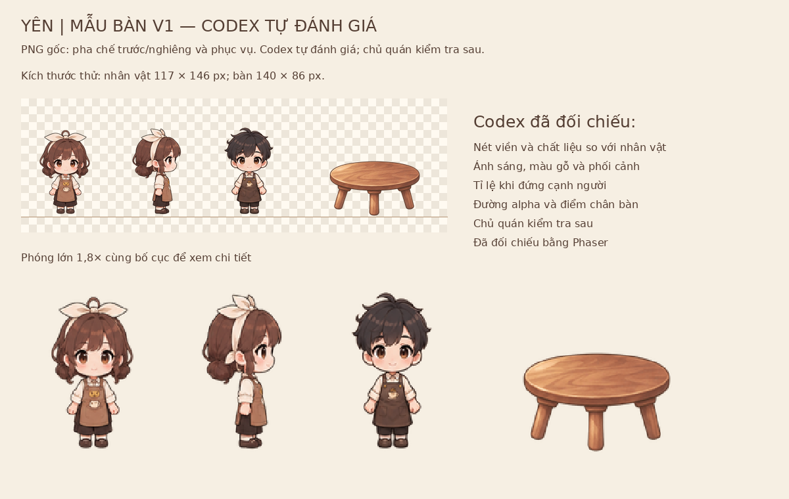

Mẫu bàn v1 — Codex tự đánh giá
Nhân vật dùng đúng PNG hiện có. Codex đã đối chiếu và tích hợp bàn theo uỷ quyền; chủ quán kiểm tra sau.
Nhân vật 117 × 146 px · Bàn 140 × 86 px · Đánh giá bởi Codex; chưa ghi nhận chủ quán đã kiểm tra.
Không tải được bản thử Phaser.
Hãy xem nét viền, chất liệu, ánh sáng, phối cảnh và kích thước cạnh nhân vật. Chưa có tư thế ngồi mới.

Quay lại game